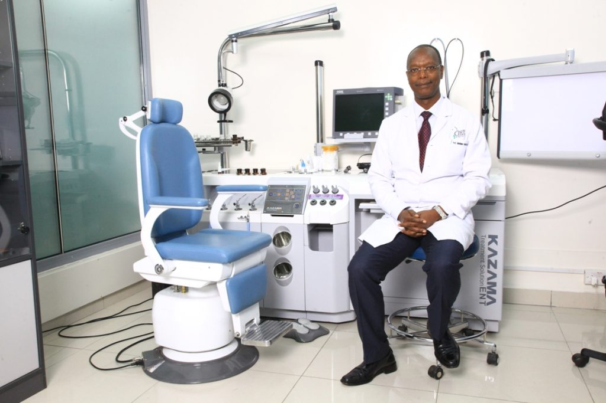
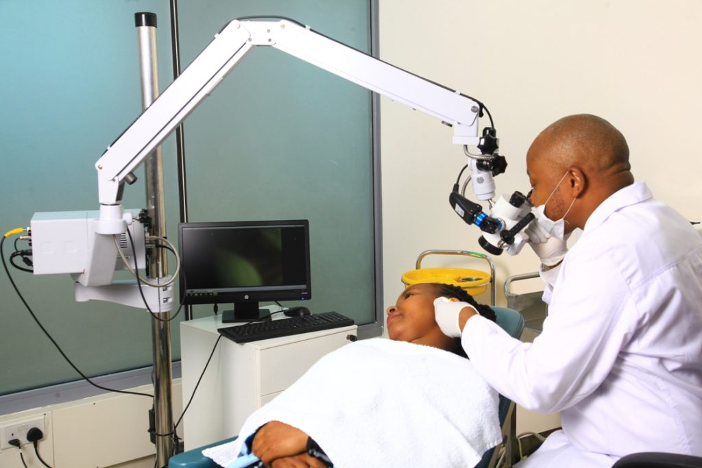
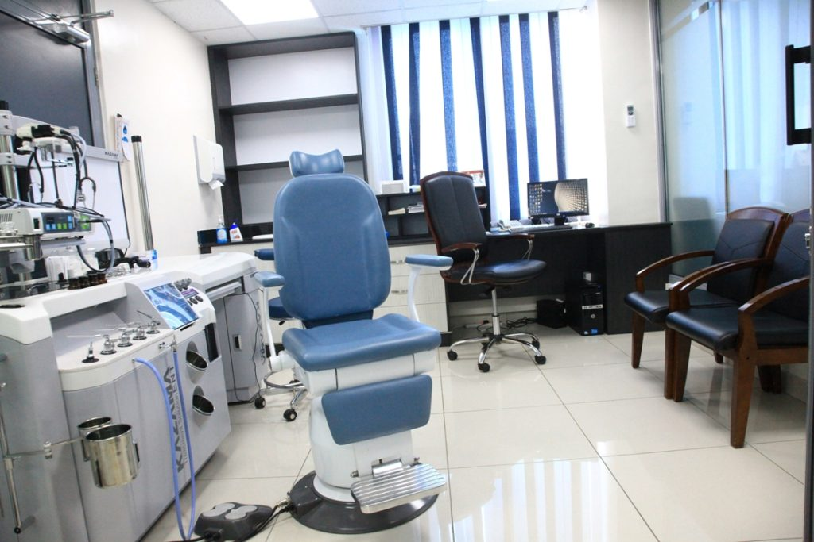
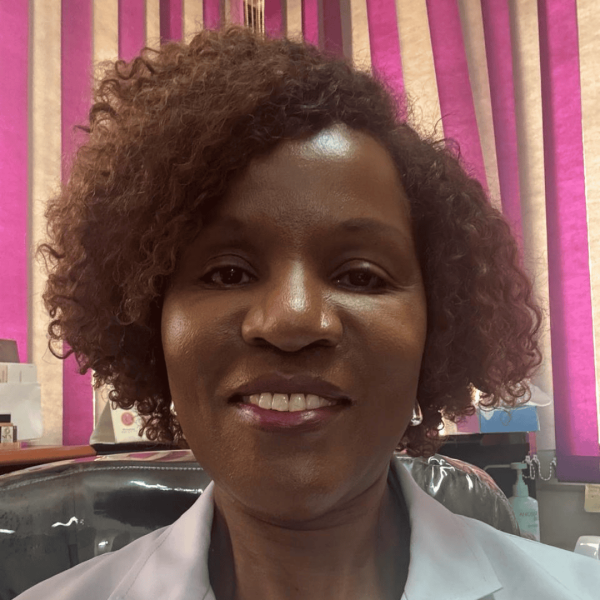
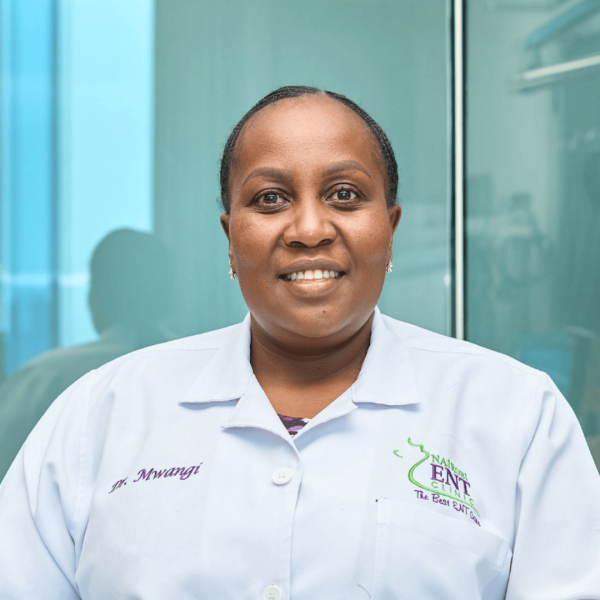

Our mission
To provide high quality, ethical and personalised ENT care through timely and cost-effective services, delivered by well-trained staff using state-of-the-art technology.
Ear, nose & throat specialists in Kenya
Nairobi ENT Clinic is a multi-specialist ear, nose and throat practice with 8 ENT surgeons across 6 clinics in Nairobi and Kisumu, caring for adults and children from first consultation to surgery and recovery.
across Nairobi & Kisumu
with head & neck expertise
from hearing to voice & sleep
paediatric & adult care
Our story
Founded by ENT, Head and Neck Surgeons Prof. Isaac M. Macharia and Dr. Chimmy Omamo-Olende, Nairobi ENT is a progressive, multi-physician practice built around one simple idea: specialist care that feels personal.

To provide high quality, ethical and personalised ENT care through timely and cost-effective services, delivered by well-trained staff using state-of-the-art technology.
The highest quality ear, nose and throat care, with patient comfort and satisfaction at the centre, using the latest advances in technology and treatment.
What we do
From a blocked nose to complex head and neck surgery, our specialists diagnose, treat and follow you through every step.

Diagnosis and treatment for everyday and complex ear, nose and throat conditions in adults and children.
Sinus, nasal and allergy care to help you breathe freely again.
Assessment and therapy for speech, language and swallowing difficulties.
Snoring, sleep apnoea, sleep studies and CPAP support.
Specialist surgery for head and neck conditions, including cancers.
Care for hoarseness, voice strain and vocal cord problems.
Expert care for the voice box, airway and swallowing.
Book a consultation and an ENT specialist will guide you to the right care.
Patient information
Clear, doctor-written guides to common ENT conditions, what causes them and how they are treated.
Why choose us
Your health and comfort come first, backed by a dedicated team and advanced facilities.

Our team is made up of skilled ENT, head and neck surgeons with years of experience treating adults and children.
We take time to understand your symptoms and build a treatment plan around your needs.
Our clinics are equipped with the latest endoscopy, microscopy and hearing-testing technology for accurate diagnosis.
From reception to recovery, we prioritise your comfort and wellbeing in every interaction.
Six clinics across Nairobi and Kisumu make it easy to get expert care close to home or work.
Your visit
Book online, call or WhatsApp us, or choose a virtual consultation.
Meet an ENT specialist who listens and examines you thoroughly.
Get clear answers from on-site tests and a plan made for you.
We follow up and support you until you feel like yourself again.
Meet the team

Dr. Chimmy Omamo-Olende Founder · ENT, Head & Neck Surgeon Dr. Samuel Nyagah ENT Surgeon Dr. Sophie Gitonga ENT & Facial Aesthetic Surgeon
Dr. Grace Mwangi ENT Surgeon Dr. Ian Macharia ENT Surgeon Dr. Caroline Muturi ENT, Head & Neck Surgeon Dr. Ngugi ENT SurgeonLocations
Visit us in leading hospitals and convenient malls across Nairobi and Kisumu.
Anderson Building, 5th Floor, Nairobi
Doctors’ Plaza, 1st Floor, Room 110
Greenspan Mall, 2nd Floor, Donholm
Business Bay Square (BBS Mall), 1st Floor
Kiambu Road, Nairobi
Mega City Mall, Ground Floor, Kisumu
Patient stories
“The ENT clinic provided outstanding care for my throat condition. The doctor explained everything clearly, and the treatment was effective.”
“From the first consultation, the specialist made me feel comfortable. My nose surgery went smoothly, and the follow-up care was excellent.”
“The doctor was thorough and patient, taking time to address all my concerns. My hearing has improved drastically after treatment.”
“I feel very blessed to have this clinic in our community. All the nurses and doctors were very caring and professional.”
“My hearing loss was addressed with a personalised plan, and I’ve experienced noticeable improvement. Care that exceeded my expectations.”
Book a visit at any of our six clinics, chat with us on WhatsApp, or see a specialist from home with a virtual consultation.